Rod Simulation and Cable Manipulation
Research demonstrations from my ongoing simulation and robotics project at UCLA.
GS Optimization
The simulator renders the lab table from a 3D Gaussian Splatting (3DGS) scan, which looks soft and hazy up close. Three methods make it look more like a photo. Select one to compare it with the unmodified version; click any image to open it at full resolution.
Post-processing vs. original render
A GPU chain runs on each rendered frame: multi-band sharpening scaled by per-pixel depth, smoothing of low-contrast splat mottling, then a tone curve, vignette, slight chromatic aberration and sensor noise. Occlusion edges are protected and depth is untouched; with the filter off, the output is bit-identical to the original renderer. It cannot add detail the scan never captured, so keyboard lettering stays blurry.
- ~4–5 ms per 1080p frame
- Presets: photo, crisp, neutral
- Scene data unchanged
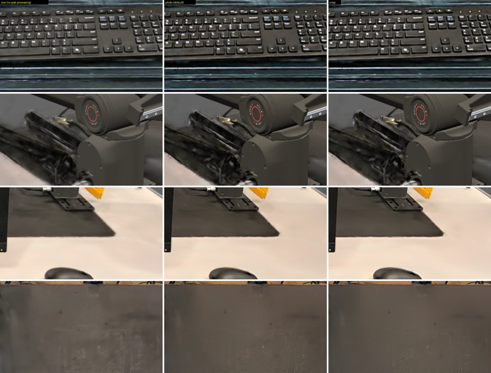
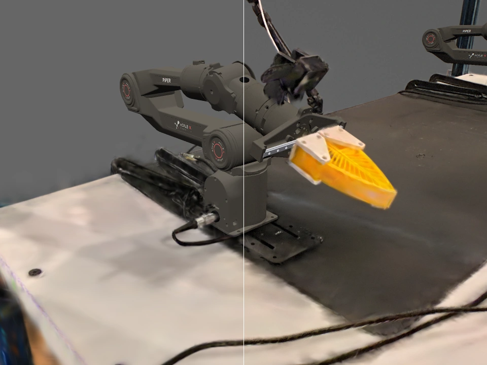
Supplementary capture vs. original scan
In the scan, the table top is a 1–3 cm layer of semi-transparent splats, so it looks hazy from every angle. Four new phone photos of the table were registered to the scan and stitched into a texture on the physical table plane, with the arms, monitor and mouse masked out. The texture replaces about 120,000 haze splats, and the table depth now matches the collision plane (the scan sat about 4 mm low). Objects on the table still come from the scan, and the ~17% of the table no photo saw (under the arms, in front of the monitor) is filled smoothly. Cables appear where they lay when the photos were taken, not where they were during the scan.
- 4 phone photos
- 0.5 mm per texel
- ~1 mm alignment to the scan
- ~2.7 ms per frame
Pole camera over the arm workspace
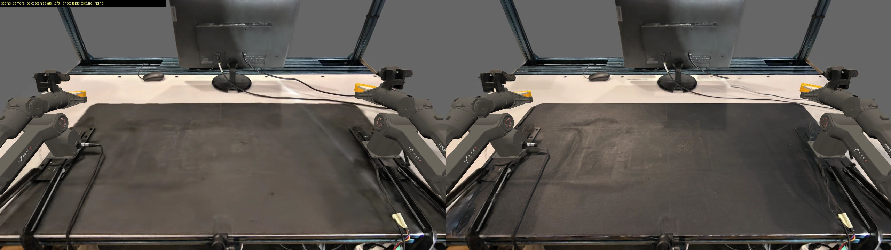
Oblique close-up of the desk mat
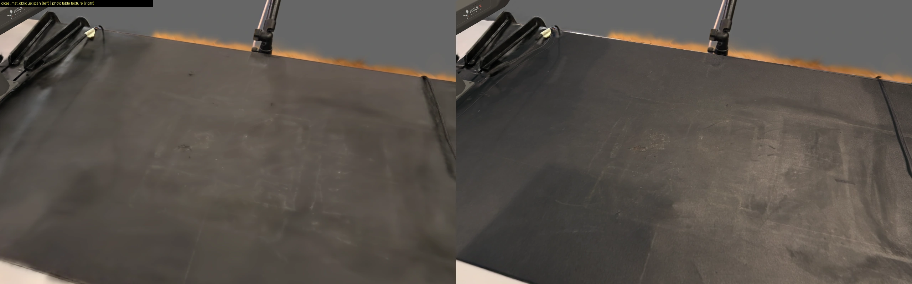
Close-up of the left white board
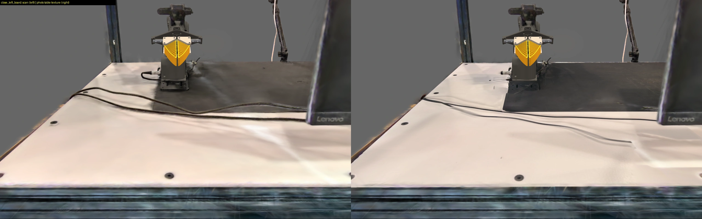
Left-arm camera
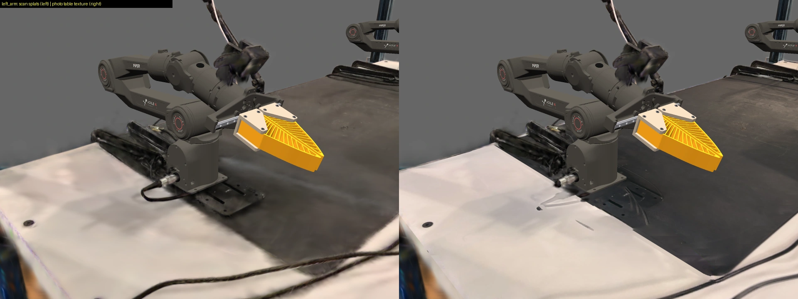
Front view from 1.3 m
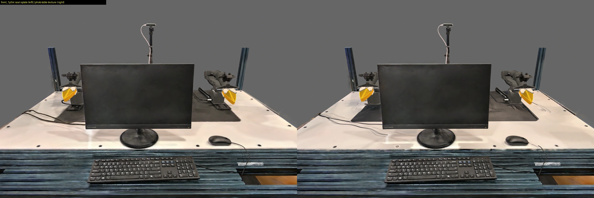
Difix3D and Difix3D+ vs. original scan
There are no source photos for this scan, so NVIDIA's Difix, a single-step diffusion model that removes rendering artifacts, works on rendered views instead. 384 views along the real scanner path and over the table were rendered, fixed with Difix and distilled back into the splats over four rounds, with depth held to the original scan. The result, Difix3D, is a new splat set that still renders in real time. Difix3D+ runs Difix once more on each final frame, which only works offline. Both look much cleaner, but the added detail is generated rather than measured: small lettering such as the “Lenovo” logo gets rewritten.
- 738,669 → 1,028,126 splats
- 1080p render 20.9 → 25.5 ms
- ~45 min distillation
- Difix3D+ ~1 s per frame
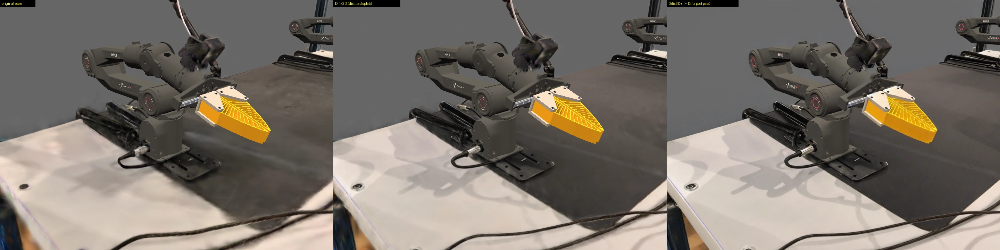
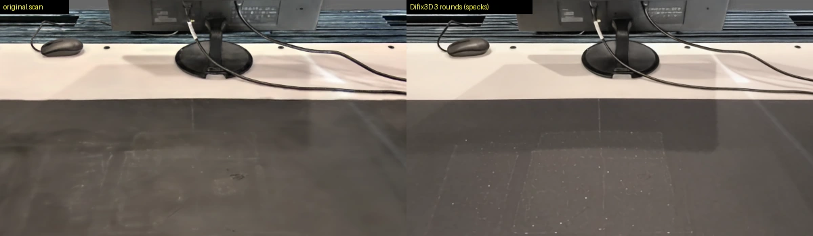
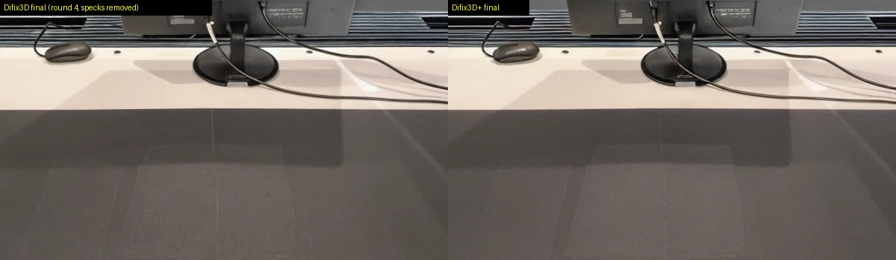
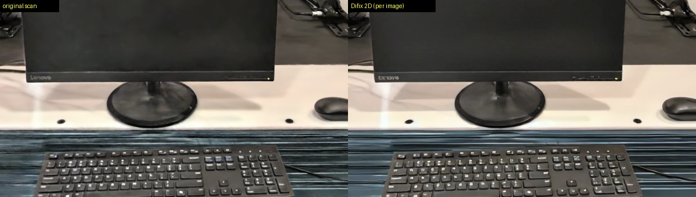
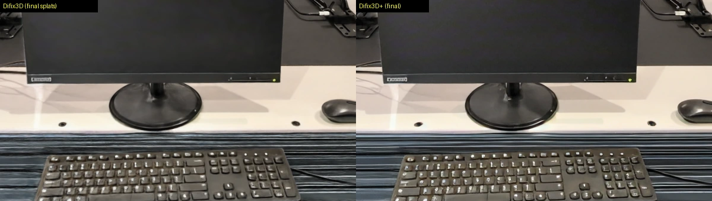